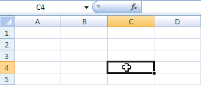

4.1. Selección de celdas
4.1. Selección de celdas
4.1. Selección de celdas
Antes de realizar cualquier modificación a una celda o a un rango de celdas con Excel 2016, tendremos que seleccionar aquellas celdas sobre las que queremos que se realice la operación. A continuación encontrarás algunos de los métodos de selección más utilizados.
Te recomendamos iniciar Excel 2016 ahora para ir probando todo lo que te explicamos.
A la hora de seleccionar celdas, es muy importante fijarse en la forma del puntero del ratón para saber si realmente vamos a seleccionar celdas o realizar otra operación. La forma del puntero del ratón a la hora de seleccionar celdas consiste en una cruz gruesa blanca, tal como se ve a continuación:
Hay varias formas de seleccionar elementos:
-
Selección de una celda: Solo tienes que hacer clic sobre ella.
-
Selección de una columna: Hacer clic en el identificativo superior de la columna a seleccionar.
-
Selección de una fila: Hacer clic en el identificativo izquierdo de la fila.
4.2. Añadir a una selección
Muchas veces puede que se nos olvide seleccionar alguna celda o que queramos seleccionar celdas NO contiguas. Para ello, se ha de realizar la nueva selección manteniendo pulsada la tecla CTRL.
Este tipo de selección se puede aplicar con celdas, columnas o filas. Por ejemplo, podemos seleccionar una fila y añadir una nueva fila a la selección haciendo clic sobre el indicador de fila manteniendo pulsada la tecla CTRL.